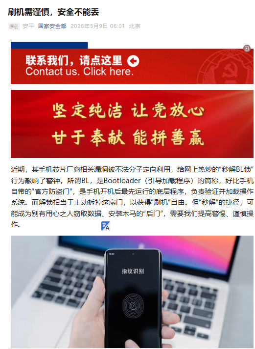

Caelia🍥
@lckmtfdesu
@whyyoutouzhele auv不让解bl不会是因为这样就没法装你那b病毒程序国家反诈中心了吧
盗窃数据安装木马是谁在干心里没点b数吗
不过与我无关我日版索尼（

李老师不是你老师
@whyyoutouzhele
5月9日，国安部再发“重磅内容”，文章称，某手机芯片厂商相关漏洞被不法分子定向利用，给网上热炒的“秒解BL锁”行为敲响了警钟。所谓BL，是Bootloader（引导加载程序）的简称，好比手机自带的“官方防盗门”，是手机开机后最先运行的底层程序，负责验证并加载操作系统。而解锁相当于主动拆掉这扇门，以获得 https://t.co/eT6Slj4x9o https://t.co/N1ulJLvSxq